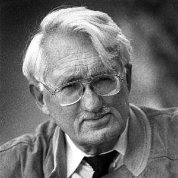

Who Is Jürgen Habermas?
Jürgen Habermas (born 1929) is a German philosopher and social theorist widely regarded as one of the most important thinkers in contemporary philosophy. His work has influenced political philosophy, social theory, ethics, sociology, communication studies, law, and democratic theory.
Jürgen Habermas's philosophy is especially concerned with communication and the conditions under which human beings can reach understanding through rational discussion. Rather than viewing reason only as a tool for controlling nature or achieving private goals, Habermas developed the idea of communicative rationality.
Habermas is also closely associated with the Frankfurt School and the tradition of Critical Theory. He attempted to develop this tradition beyond some of its earlier pessimism by defending the possibility that communication, public debate, and democratic institutions can still support rational criticism.
His most famous ideas include communicative action, discourse ethics, the public sphere, deliberative democracy, the distinction between lifeworld and system, and the idea of the colonization of the lifeworld. Together, these concepts form one of the most ambitious philosophical accounts of modern society.
Jürgen Habermas: Quick Facts
- Full name — Jürgen Habermas
- Born — June 18, 1929
- Nationality — German
- Philosophical tradition — Critical Theory, contemporary philosophy, social and political philosophy
- Associated movement — The second generation of the Frankfurt School
- Major fields — Philosophy, sociology, political theory, ethics, communication, and social theory
- Major subjects — Communication, democracy, rationality, ethics, modernity, law, and society
- Famous idea — Communicative action
- Political theory — Deliberative democracy
- Important concept — The public sphere
- Major work — The Theory of Communicative Action
- Major contribution — Development of discourse ethics and modern democratic theory
Jürgen Habermas's Early Life and Education

Jürgen Habermas was born in Düsseldorf, Germany, in 1929 and grew up during one of the most turbulent periods in modern European history. His early life was shaped by the aftermath of the Second World War and by the difficult questions Germany faced concerning authoritarianism, responsibility, democracy, and public memory.
Habermas studied philosophy, history, psychology, literature, and economics. This broad intellectual education later became visible in his work, which moves between philosophy and the social sciences. Habermas consistently attempted to understand philosophical problems within their wider social and historical context.
He became connected with the Institute for Social Research and the intellectual tradition known as the Frankfurt School. Earlier figures such as Max Horkheimer and Theodor Adorno had developed Critical Theory as a way of examining power, ideology, capitalism, culture, and modern forms of domination.
Habermas eventually developed his own philosophical direction. While remaining connected with Critical Theory, he became increasingly interested in language, communication, democratic institutions, and the possibility of rational agreement. These concerns would become central to Jürgen Habermas's philosophy.
Why Is Jürgen Habermas Important?
Jürgen Habermas is important because he developed one of the most influential modern theories of communication and rationality. His philosophy challenges the idea that reason exists only to help individuals achieve their personal goals or control the world around them.
Habermas argued that human beings also use reason when they communicate with one another and attempt to reach understanding. This form of rationality, which he called communicative rationality, provides the foundation for his theories of ethics, democracy, and social cooperation.
His theory of the public sphere also transformed discussions about democracy. Habermas examined the importance of spaces in which citizens can discuss public issues, criticize authority, exchange arguments, and participate in the formation of public opinion.
Habermas remains important because his ideas connect abstract philosophy with practical questions about modern life. His work asks how democratic societies can remain rational and legitimate when they contain deep disagreements, competing interests, powerful institutions, mass media, economic systems, and increasingly complex technologies.
The Historical Context of Jürgen Habermas's Philosophy
Habermas developed his philosophy in postwar Germany, where questions about democracy and authoritarianism had become especially urgent. The experience of fascism and the Holocaust created a profound challenge for European intellectuals who wanted to understand how modern societies could produce such destructive forms of power.
The earlier Frankfurt School had responded by developing Critical Theory. Thinkers associated with this tradition examined how economic structures, political power, mass culture, technology, and ideology could influence human consciousness and limit genuine freedom.
At the same time, twentieth-century philosophy increasingly turned toward language and communication. Philosophers recognized that human understanding is deeply connected with linguistic practices, social interaction, interpretation, and the rules that make meaningful communication possible.
Habermas brought these developments together. He combined Critical Theory with ideas from sociology, linguistics, philosophy of language, pragmatism, and democratic theory. His work therefore became an attempt to explain how modern societies could criticize domination while still defending the possibility of rational communication.
Jürgen Habermas and the Frankfurt School
Jürgen Habermas is commonly described as a member of the second generation of the Frankfurt School. The Frankfurt School was associated with the Institute for Social Research and developed Critical Theory as an interdisciplinary approach to understanding modern society and forms of domination.
Earlier Frankfurt School thinkers such as Max Horkheimer and Theodor Adorno were deeply concerned about the destructive possibilities of modern rationality. They argued that reason could become instrumental, functioning mainly as a tool for calculation, control, efficiency, and domination.
Habermas accepted much of this criticism but believed that reason should not be understood only in instrumental terms. He argued that human communication contains another possibility: people can use language to question claims, give reasons, criticize one another, and seek mutual understanding.
This shift became one of Habermas's most important contributions to Critical Theory. Instead of abandoning reason as a source of possible domination, Habermas attempted to reconstruct reason around communication. Critical Theory could therefore criticize society while still defending rational dialogue and democratic participation.
Jürgen Habermas's Main Philosophical Ideas
1. Communicative Action
Communicative action occurs when people interact primarily to reach understanding rather than simply to manipulate or control one another. Communication can therefore become a form of rational cooperation based on giving reasons and responding to criticism.
2. Communicative Rationality
Habermas argued that rationality is not limited to calculation or scientific control. Human beings can also act rationally when they communicate openly, question claims, justify their beliefs, and seek understanding with others.
3. The Public Sphere
The public sphere refers broadly to the social space in which citizens discuss matters of common concern. Habermas considered public discussion essential for democracy because political authority should remain open to criticism and public justification.
4. Discourse Ethics
Habermas developed an approach to ethics based on rational discussion. Moral norms should be capable, in principle, of receiving acceptance from those affected through fair processes of communication rather than being imposed without justification.
5. Lifeworld and System
Habermas distinguished between the everyday social world of shared meanings and relationships, called the lifeworld, and large organized systems such as markets and bureaucracies. Modern society creates tensions when systems increasingly dominate ordinary social life.
What Is Communicative Action?
Communicative action is one of Jürgen Habermas's most important philosophical concepts. It describes action oriented toward mutual understanding. People engaged in communicative action do not merely attempt to achieve private success; they attempt to coordinate their actions through communication.
For Habermas, language makes this possible because speakers can raise claims that others may question. When someone makes a statement, they can be asked whether it is true, whether it is appropriate, or whether they are speaking sincerely.
Communication therefore contains a critical dimension. Participants are not required simply to accept every statement made by another person. They can ask for reasons, challenge assumptions, identify contradictions, and revise their own views.
Habermas believed that this capacity for reasoned communication is fundamentally important for understanding human society. Democratic politics, moral discussion, education, law, and ordinary social cooperation all depend, to different degrees, upon the possibility of people reaching understanding through language.
Jürgen Habermas and Communicative Rationality
Communicative rationality is Habermas's alternative to a narrow understanding of reason as calculation and efficiency. Modern societies often value rational methods for achieving goals, but Habermas argued that this does not represent the whole meaning of human rationality.
People also use reason when they explain themselves to others and attempt to justify what they believe. A rational discussion allows participants to examine claims instead of relying entirely upon force, tradition, status, or unquestioned authority.
Habermas therefore connected rationality with the possibility of criticism. A person should be able to ask why something is believed, why a rule should be followed, or why a political decision is legitimate. The demand for justification becomes central to his philosophical understanding of reason.
This idea has important political consequences. A democratic society cannot depend only upon elections and institutions; it also requires opportunities for citizens to exchange reasons and participate in public discussion. Communication becomes an essential part of democratic legitimacy.
Habermas's Theory of Validity Claims
Habermas argued that ordinary communication contains implicit validity claims. When people communicate seriously, they usually present themselves as saying something meaningful and potentially defensible rather than merely producing meaningless sounds.
One important claim concerns truth. When a person makes a statement about the world, others may ask whether the statement is accurate. The claim can therefore become open to evidence, argument, criticism, and correction.
Communication can also involve claims concerning rightness or appropriateness. When people defend a moral or social norm, others may ask whether that norm is justified and whether those affected have good reasons to accept it.
Habermas also emphasized sincerity. Communication depends partly upon the expectation that speakers genuinely mean what they say. These different validity claims help explain why language can become a medium for rational criticism and mutual understanding.
What Is Discourse Ethics?
Discourse ethics is Habermas's approach to moral philosophy based on communication and rational justification. Instead of asking only whether a moral rule produces good consequences, Habermas examines whether the rule could be justified to those who are affected by it.
Moral questions often involve conflicts between different individuals and interests. Habermas argued that legitimate norms should not simply be imposed by the most powerful group. Those affected should, in principle, have the opportunity to participate in processes of discussion and justification.
This does not mean that every real-world discussion is perfectly fair. Habermas was well aware that communication can be distorted by power, inequality, fear, economic pressure, and manipulation. His theory provides a critical standard for examining these failures.
Discourse ethics therefore connects morality with democratic participation. Ethical legitimacy is related to the possibility of giving reasons that others can critically examine. Habermas attempts to preserve universal moral reasoning without ignoring the importance of actual communication between human beings.
The Ideal Speech Situation
The idea of the ideal speech situation is associated with Habermas's attempt to identify conditions under which communication could take place without unnecessary domination. The concept is not simply a description of ordinary political discussion, which is often shaped by unequal power.
Instead, the idea functions as a critical standard. In an ideal situation, participants would be able to raise questions, challenge claims, present arguments, and participate without being silenced by coercion or arbitrary authority.
Critics have sometimes argued that such conditions are impossible to achieve completely. Habermas's point, however, is not necessarily that real societies will become perfectly free from power, but that democratic communication can be evaluated according to standards of openness and justification.
The concept therefore encourages philosophers and political theorists to ask who is excluded from discussion and whose voices are ignored. Communication cannot be considered fully rational when some participants are systematically prevented from questioning or challenging the claims of others.
Jürgen Habermas and the Public Sphere
The public sphere is one of Habermas's most widely discussed ideas. It refers broadly to the sphere of social life in which people come together to discuss matters of common concern and form opinions about public and political issues.
Habermas examined the historical development of the bourgeois public sphere in Europe. He was interested in the emergence of spaces where citizens could discuss literature, politics, and social issues outside direct control by traditional political authority.
In an ideal democratic public sphere, arguments should matter more than social status or wealth. Citizens should be able to criticize governments and institutions, exchange information, and participate in discussions that contribute to public opinion.
Habermas also recognized that modern mass media and commercial interests can transform public communication. The public sphere can be weakened when communication becomes dominated by propaganda, manipulation, concentrated ownership, or purely commercial interests rather than genuine public discussion.
Jürgen Habermas and Deliberative Democracy
Deliberative democracy is a political theory that emphasizes discussion, argument, and public reasoning. Habermas argues that democracy should not be understood only as a competition between private interests or as a system in which citizens merely vote every few years.
Democratic legitimacy also depends upon processes through which political decisions can be publicly discussed and justified. Citizens, representatives, institutions, and civil society should participate in an ongoing exchange of arguments about matters that affect the public.
Habermas does not assume that democratic citizens will always agree. Modern societies contain different religions, cultures, values, and interests. The purpose of deliberation is therefore not necessarily to eliminate disagreement but to make collective decisions more open to reason and public justification.
His theory has become highly influential in political philosophy and democratic theory. It has shaped discussions about parliaments, constitutional law, public participation, citizens' assemblies, civil society, and the conditions necessary for democratic legitimacy.
What Is the Lifeworld in Habermas's Philosophy?
The lifeworld refers to the background of shared meanings, cultural understandings, relationships, traditions, and everyday assumptions that make social communication possible. People usually do not question every aspect of this background during normal daily interaction.
The lifeworld provides a context within which people understand one another. Families, communities, education, culture, and ordinary language all contribute to the shared background that makes communication and social cooperation possible.
Habermas believed that the lifeworld is reproduced partly through communication. People pass on cultural meanings, develop personal identities, and maintain social relationships through interaction with others.
However, the lifeworld can be placed under pressure by large social systems that operate according to different forms of coordination. This concern leads to Habermas's famous distinction between the lifeworld and system.
Habermas's Theory of System
Habermas used the concept of system to describe highly organized areas of modern society that do not depend primarily upon ordinary communicative understanding. Important examples include the economic system and large bureaucratic institutions.
Systems often coordinate action through specialized mechanisms. In the economy, money plays an important role in organizing transactions. In administrative systems, official authority and bureaucratic procedures can coordinate large numbers of people and institutions.
Habermas did not argue that systems are automatically harmful. Complex modern societies could not function entirely through face-to-face discussion. Markets and institutions can perform important practical functions that would be impossible to manage through constant personal agreement.
The problem appears when systems expand into areas of life where communication, personal relationships, and shared understanding should remain important. Habermas described this process as the colonization of the lifeworld.
The Colonization of the Lifeworld
Colonization of the lifeworld is one of Habermas's most important criticisms of modern society. The concept describes a process in which the logic of large systems increasingly enters areas of life traditionally organized through personal relationships, shared values, and communication.
Economic and bureaucratic forms of thinking can become dominant even in areas such as education, family life, culture, and community. People may increasingly be treated as consumers, clients, data points, or administrative cases rather than as participants in meaningful communication.
Habermas believed that this process could produce social and personal problems. When communication is replaced by purely instrumental relationships, individuals may experience alienation and a weakening of social solidarity.
The concept remains relevant to contemporary debates about commercialization, bureaucracy, digital technology, surveillance, and the growing influence of economic systems on everyday life. Habermas asks whether efficiency can replace genuine human understanding without significant social costs.
Knowledge and Human Interests
In Knowledge and Human Interests, Habermas examined the relationship between knowledge and human purposes. He challenged the assumption that all knowledge is produced through one universal method and argued that different forms of inquiry are connected with different human interests.
Scientific and technical knowledge can help human beings predict and control aspects of nature. Other forms of knowledge are concerned with interpretation, cultural meaning, communication, and understanding the social world.
Habermas also emphasized the importance of critical knowledge. Critical reflection can help individuals and societies recognize hidden forms of domination, ideology, and distorted communication. Knowledge therefore has the potential to contribute to human emancipation.
This work demonstrates Habermas's connection with Critical Theory. He was interested not only in describing society but also in examining how social conditions influence human freedom. Philosophy can therefore become a form of critical reflection on the interests and structures shaping knowledge itself.
Jürgen Habermas and Modernity
Habermas is an important defender of the philosophical project of modernity. He argues that the ideals associated with Enlightenment reason, democracy, criticism, and human emancipation should not simply be abandoned because modern societies have also produced domination and destruction.
Habermas famously described modernity as an "unfinished project". The failures of modern societies do not necessarily prove that the ideals of rational criticism and democratic freedom are meaningless; they may show that these ideals have not yet been adequately realized.
This position brought Habermas into important debates with postmodernism. Some postmodern thinkers expressed deep suspicion toward universal reason and large philosophical narratives about human progress.
Habermas accepted that modernity had serious contradictions but resisted the complete rejection of rational universality. Without some possibility of shared reasons and public criticism, he argued, it becomes difficult to explain why domination and injustice should be criticized at all.
Jürgen Habermas and Postmodernism
Habermas became an important critic of philosophical postmodernism. He was concerned that radical skepticism about reason and universal standards could weaken the foundations needed for criticism, democratic discussion, and moral justification.
Postmodern thinkers often emphasized differences between cultures, perspectives, languages, and systems of power. Habermas accepted that human knowledge is historically and socially situated, but he argued that this does not eliminate the possibility of rational communication.
His disagreement with Michel Foucault and other contemporary thinkers reflects a broader philosophical question: can reason itself be defended without ignoring the ways in which power influences knowledge, institutions, and social life?
Habermas attempted to preserve a critical conception of reason. He argued that people can recognize distorted communication precisely because communication contains an implicit orientation toward mutual understanding and the possibility of giving reasons.
Jürgen Habermas on Law and Democracy
Habermas developed an important theory of the relationship between law and democracy. Modern societies require legal institutions because millions of people must coordinate their actions without personally knowing one another.
However, legal authority requires legitimacy. Citizens should not simply obey laws because powerful institutions demand obedience. Democratic laws should be connected with political processes through which citizens can participate, directly or indirectly, in public deliberation.
Habermas therefore connects individual rights with democratic participation. Citizens need legal protections that allow them to speak, organize, criticize, and participate in political life, while democratic institutions provide mechanisms for collective self-government.
His work has been particularly influential in constitutional theory and legal philosophy. Habermas attempts to explain how modern legal systems can combine personal freedom with collective democratic decision-making.
Jürgen Habermas on Religion and the Public Sphere
In his later work, Habermas devoted increasing attention to religion in modern democratic societies. He did not argue that religious citizens should simply be excluded from public discussion because their beliefs contain religious language or theological commitments.
Modern democracies contain both religious and nonreligious citizens. Habermas therefore explored how people with fundamentally different worldviews might participate in a shared political community without forcing everyone to abandon their deepest convictions.
He developed the idea of a post-secular society to describe societies in which religion continues to remain socially and politically significant despite expectations that modernization would cause religion to disappear completely.
Habermas's approach emphasizes mutual learning. Religious and secular citizens should attempt to understand one another and participate in democratic communication. This has made his work important in modern debates about pluralism, secularism, religious freedom, and democracy.
The Theory of Communicative Action
The Theory of Communicative Action is widely considered Jürgen Habermas's major philosophical work. In this ambitious project, Habermas attempted to develop a comprehensive theory of rationality, language, communication, and modern society.
The work distinguishes between action oriented toward strategic success and action oriented toward mutual understanding. This distinction allowed Habermas to criticize forms of social interaction in which people treat one another mainly as objects to be controlled.
Habermas also developed his distinction between lifeworld and system. Modern societies require both personal communication and complex institutions, but tensions arise when bureaucratic and economic systems increasingly dominate areas of everyday life.
The importance of the work lies in its attempt to connect many areas of thought. Philosophy of language, sociology, political theory, ethics, and Critical Theory all become part of Habermas's larger effort to explain how rational communication remains possible in modern society.
Habermas and Instrumental Reason
A major concern of Critical Theory is the development of instrumental reason. This form of reasoning focuses on finding the most efficient means of achieving a particular goal, often without questioning whether the goal itself is justified.
Instrumental reasoning is extremely useful in many areas of life. Science, engineering, administration, and technology all require forms of calculation and strategic planning. Habermas did not argue that these forms of reasoning should disappear.
The problem arises when instrumental reasoning becomes the only model of rationality. If every human relationship is understood in terms of efficiency, competition, profit, or control, the importance of mutual understanding and moral justification can be weakened.
Habermas therefore defended communicative rationality as another essential form of reason. Human beings are not only problem-solving individuals; they are also social beings who communicate, justify norms, criticize power, and attempt to understand one another.
Jürgen Habermas and Critical Theory
Critical Theory attempts to move beyond simply describing society. It asks how social structures, economic systems, cultural practices, and institutions may create domination and limit human freedom.
Habermas continued this tradition while changing its philosophical foundation. Earlier Critical Theory sometimes appeared deeply skeptical about whether modern forms of reason could escape domination. Habermas sought a more constructive account of rational criticism.
His theory of communication provided this foundation. If people are capable of questioning claims and demanding reasons, then distorted communication and unjust authority can become objects of rational criticism.
Habermas's version of Critical Theory therefore combines criticism with hope. Modern society contains serious forms of inequality and domination, but the possibility of democratic communication provides resources for identifying problems and working toward more legitimate social arrangements.
Jürgen Habermas and Karl Marx
Habermas was influenced by the Marxist tradition but did not simply repeat Karl Marx's philosophy. Like Marx, he was concerned with the structures of modern society, economic power, ideology, and the conditions that may limit human freedom.
However, Habermas believed that a theory focused primarily on labor and production could not fully explain the complexity of modern society. Communication, language, democratic institutions, law, and culture also play fundamental roles in social life.
Habermas therefore expanded Critical Theory beyond a purely economic analysis. He examined how social integration can occur through communication and how democratic societies depend upon public discussion as well as economic structures.
His relationship with Marxism demonstrates his broader philosophical project. Habermas retained the critical concern with domination and emancipation while developing new concepts capable of addressing the institutions and communication systems of contemporary societies.
Major Works of Jürgen Habermas
- The Structural Transformation of the Public Sphere — Habermas's influential study of the historical development of the public sphere and its importance for democratic society.
- Knowledge and Human Interests — A major work examining the relationship between forms of knowledge, human purposes, interpretation, science, and emancipation.
- Theory of Communicative Action — Habermas's major philosophical work on communication, rationality, lifeworld, system, and modern society.
- The Philosophical Discourse of Modernity — A major examination and defense of modernity in relation to contemporary critics and postmodern thought.
- Between Facts and Norms — An important work on law, democracy, constitutionalism, and the relationship between individual rights and democratic legitimacy.
- Communication and the Evolution of Society — A collection exploring communication, social development, and theoretical questions central to Habermas's philosophy.
Jürgen Habermas's Most Important Concepts
Communicative Action
Action directed toward reaching mutual understanding through communication rather than simply manipulating or controlling other people for private advantage.
Communicative Rationality
A form of rationality expressed through giving reasons, questioning claims, responding to criticism, and seeking understanding with others.
The Public Sphere
The social space in which citizens discuss matters of common concern, criticize authority, exchange arguments, and contribute to the formation of public opinion.
Discourse Ethics
An ethical approach in which moral norms require rational justification and should, in principle, be open to discussion by those affected by them.
Lifeworld
The background of shared meanings, relationships, cultural knowledge, and everyday assumptions that makes communication and ordinary social life possible.
System
Large organized structures such as markets and bureaucracies that coordinate social activity through specialized mechanisms rather than ordinary communicative understanding.
Colonization of the Lifeworld
The process through which economic and bureaucratic systems increasingly dominate areas of life that depend upon personal relationships, shared meanings, and communication.
Deliberative Democracy
A theory of democracy emphasizing public discussion, rational argument, participation, and the justification of political decisions to citizens.
Jürgen Habermas's Influence and Legacy
Jürgen Habermas has had an enormous influence across philosophy and the social sciences. His ideas are studied in political theory, sociology, communication studies, law, ethics, education, media studies, and democratic theory.
His theory of deliberative democracy has become particularly influential. Political philosophers and democratic theorists continue to debate how public discussion can improve political legitimacy and how citizens can participate more effectively in collective decision-making.
Habermas has also influenced discussions about the media and the internet. The transformation of public communication by television, social media, digital platforms, algorithms, and concentrated technological power raises new questions about the health of the modern public sphere.
His philosophical legacy lies partly in his defense of rational communication. At a time when many thinkers became skeptical about universal reason, Habermas continued to argue that people can criticize claims, exchange arguments, and work toward mutual understanding even within complex and deeply divided societies.
Criticisms of Jürgen Habermas's Philosophy
Jürgen Habermas's philosophy has received extensive criticism. Some critics argue that his model of rational communication is too idealistic because real political discussions are deeply influenced by wealth, power, social inequality, prejudice, and institutional control.
Feminist and postcolonial thinkers have also questioned whether older models of the public sphere adequately included women and marginalized groups. Historical public spaces often excluded many people from political participation even when they claimed to represent universal public discussion.
Other critics question whether genuine consensus should always be an important democratic goal. Political societies contain persistent differences, and some theorists argue that conflict and disagreement are permanent features of democracy rather than problems that rational discussion can overcome.
Despite these criticisms, Habermas's philosophy remains highly influential because his concepts provide powerful tools for examining these very problems. Questions about exclusion, distorted communication, and unequal participation can themselves be explored through the critical standards developed by Habermas.
Jürgen Habermas's Philosophy Explained Simply
- What is Habermas's main idea? Human beings can use communication to reach understanding, question claims, give reasons, and cooperate rather than simply trying to control one another.
- What is communicative action? It is action oriented toward mutual understanding through communication rather than purely toward personal success or strategic advantage.
- What is the public sphere? It is the sphere of social life in which citizens discuss matters of public concern and contribute to the formation of public opinion.
- What is deliberative democracy? It is a theory of democracy emphasizing public discussion, argument, participation, and the rational justification of political decisions.
- What is discourse ethics? It is an approach to ethics based on the idea that moral norms should be open to rational discussion and justification among those affected.
- What is the colonization of the lifeworld? It describes the expansion of economic and bureaucratic systems into areas of life that traditionally depend upon communication, personal relationships, and shared meanings.
Why Does Jürgen Habermas Still Matter Today?
Jürgen Habermas remains highly relevant because modern societies face major problems involving communication and democracy. Citizens have access to more information and communication technologies than ever before, yet misinformation, polarization, propaganda, and manipulation have also become major concerns.
His theory of the public sphere is especially useful for understanding social media and digital platforms. Online spaces can allow more people to participate in public discussion, but they can also reward outrage, misinformation, commercial influence, and algorithmic manipulation.
Habermas's distinction between communicative action and strategic action also remains important. Modern communication is often connected with advertising, political campaigns, corporate interests, and data collection, raising questions about whether communication is genuinely oriented toward understanding.
Most importantly, Habermas continues to defend the idea that democratic societies need communication. Even when people strongly disagree, they must find ways to justify decisions, criticize power, exchange reasons, and live together. This makes Jürgen Habermas's philosophy central to understanding democracy in the modern world.
Frequently Asked Questions About Jürgen Habermas
Who is Jürgen Habermas?
Jürgen Habermas is a German philosopher and social theorist born in 1929. He is one of the most influential contemporary thinkers and is known for his work on communicative action, discourse ethics, the public sphere, Critical Theory, and deliberative democracy.
What is Jürgen Habermas famous for?
Habermas is famous for developing the theory of communicative action, the concept of communicative rationality, discourse ethics, the theory of the public sphere, deliberative democracy, and the distinction between lifeworld and system.
What is communicative action?
Communicative action is action oriented toward reaching mutual understanding through communication. People attempt to coordinate their actions by giving reasons, questioning claims, and responding to one another rather than relying only on strategic control.
What is the public sphere according to Habermas?
The public sphere is broadly the social space in which citizens discuss matters of common concern. Habermas considered public communication and criticism essential to the functioning and legitimacy of democratic societies.
What is deliberative democracy?
Deliberative democracy is a theory that emphasizes public discussion and rational argument. Democratic legitimacy depends not only upon voting but also upon processes through which political decisions can be publicly discussed and justified.
What is discourse ethics?
Discourse ethics is Habermas's approach to moral philosophy based on rational communication. Moral norms should be open to discussion and should be capable, in principle, of receiving acceptance from those affected under fair conditions of communication.
What is the lifeworld?
The lifeworld is the background of shared meanings, cultural understandings, relationships, and everyday knowledge that allows people to communicate and cooperate in ordinary social life.
What does colonization of the lifeworld mean?
Colonization of the lifeworld refers to the process in which economic and bureaucratic systems increasingly influence areas of life that depend upon personal communication, shared values, and social relationships.
Was Jürgen Habermas part of the Frankfurt School?
Yes. Habermas is commonly associated with the second generation of the Frankfurt School and the tradition of Critical Theory, although he developed important ideas that differed from earlier thinkers such as Horkheimer and Adorno.
What is The Theory of Communicative Action about?
The Theory of Communicative Action examines communication, rationality, modern society, lifeworld, and system. It develops Habermas's argument that rational communication provides an important foundation for social cooperation and democratic criticism.
What did Habermas think about modernity?
Habermas defended the idea that modernity is an unfinished project. He believed that the ideals of reason, democratic freedom, and critical discussion should be improved and developed rather than completely abandoned.
Why is Jürgen Habermas important today?
Habermas remains important because modern societies face major questions about democracy, social media, misinformation, polarization, public debate, political legitimacy, and communication. His philosophy provides important concepts for examining these problems.
Related Contemporary and Critical Philosophers
Explore other major philosophers connected with Critical Theory, political philosophy, social theory, democracy, power, modernity, and contemporary philosophical thought.
Related Areas of Philosophy
Jürgen Habermas's philosophy connects political philosophy, ethics, social philosophy, philosophy of language, epistemology, Critical Theory, democratic theory, and the broader study of modern society.
Why Jürgen Habermas Still Matters
Jürgen Habermas remains one of the most important philosophers of contemporary society because he asks how human beings can live democratically in a world shaped by enormous institutions, economic systems, technological change, and deep disagreements.
His philosophy of communicative action provides an alternative to the belief that human interaction is always a struggle for power or private advantage. Habermas argues that communication also contains the possibility of giving reasons, questioning claims, and reaching mutual understanding.
His theories of the public sphere, discourse ethics, lifeworld, and deliberative democracy remain essential for examining modern political and social problems. They encourage people to ask whether public institutions genuinely allow citizens to participate in meaningful communication.
In an age of digital communication, political polarization, global inequality, and rapid technological change, Habermas's central question remains deeply relevant: how can free and equal people use reason and communication to govern their shared world?
Explore Great Philosophers